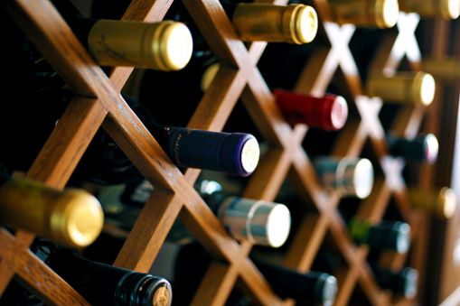
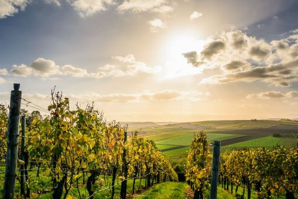
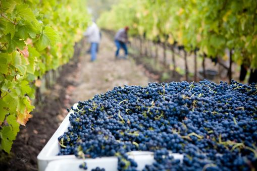

"Az új barátság olyan mint az új bor:
minél tovább érleli az idő annál több örömünk telik benne"
- Mike McQuay
A BiaBor pincészet
Családi vállalkozásunkat 2015-ben alapítottuk, akkor még csak szőlőtermesztéssel
foglalkoztunk. 2018-ban döntöttünk a szőlőfeldolgozás és borkészítés mellett.
Szőlőinket közel 2,5 hektáron az Etyek-Budai borrégió mellett Biatorbágy hatalmas szőlőültetvényein műveljük. Igyekszünk
megőrizni a táj hagyományos íz- és illatvilágát. A borok készítésénél elsősorban a reduktív eljárási
folyamatot alkalmazzuk, mellyel célunk friss, fiatalos és könnyedebb borok előállítása.
Termelt szőlőfajtáink:
Sauvignon Blanc
Muscat Ottonel
Kadarka
Kirányleányka
Cabernet Sauvignon
Merlot

Évente körülbelül 6 – 8 000 palackozott bort készítünk. Legfontosabb célunk, hogy
minőségi borainkon keresztül megmutassuk a helyi dűlőkben rejlő egyedi és kihasználatlan értékeket
A boraink megjelenése szintén rendkívül fontos szempont számunkra, éppen ezért nagy hangsúlyt
fektetünk termékeink egyediségére.

A mi üzenetünk
A legtöbb vezető kézműves termelő úgy készíti a borokat, hogy hangsúlyozza szőlőjük és
szőlőültetvényeik egyediségét; jellemzően alacsony hozamú szőlőből szüretelik a szőlőt, minimálisan
kezelik őket, és gyakran szűretlen és finomítatlan borokat palackoznak. Mi pincészetünkkel azt
akarjuk elérni, hogy a bor romantikus legyen, hogy festői szőlőültetvényekből készüljön olyan
emberek által, akik mélyen elkötelezettek a munkájuk iránt, és minden egyes palackba szeretetet
helyeznek. Ez egy jó történet egy érzelmi töltettel, hogy kapcsolatba lépjünk magával a borral.

Térjen be hozzánk Ön is!
A pázsiton kialakított kültéri pihenőhelyeink ideálisak borok, ételek és beszélgetések elfogyasztására egy gyönyörű és pihentető környezetben. A gyepszőnyegek mellett található Borpavilon minden látogató előtt nyitva áll, és minden betérő vendég számára kínálunk egy ingyenes kóstolót a legjobbnak kikiáltott boraink egyikéből.